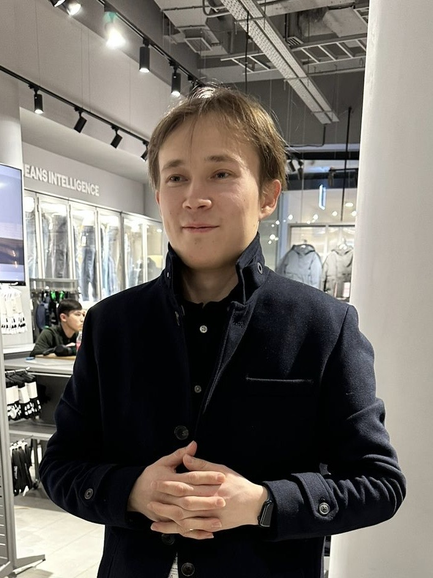
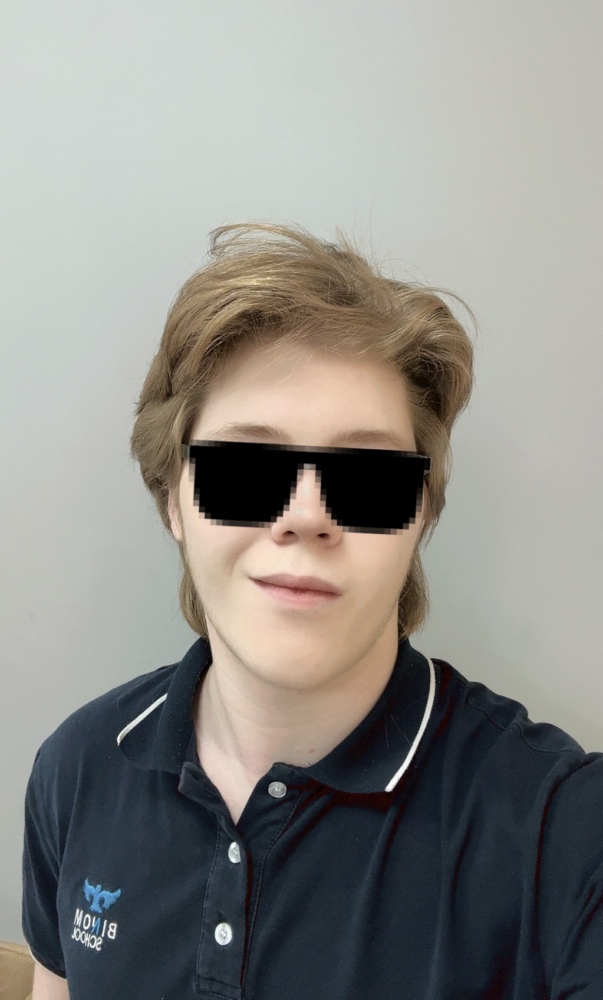
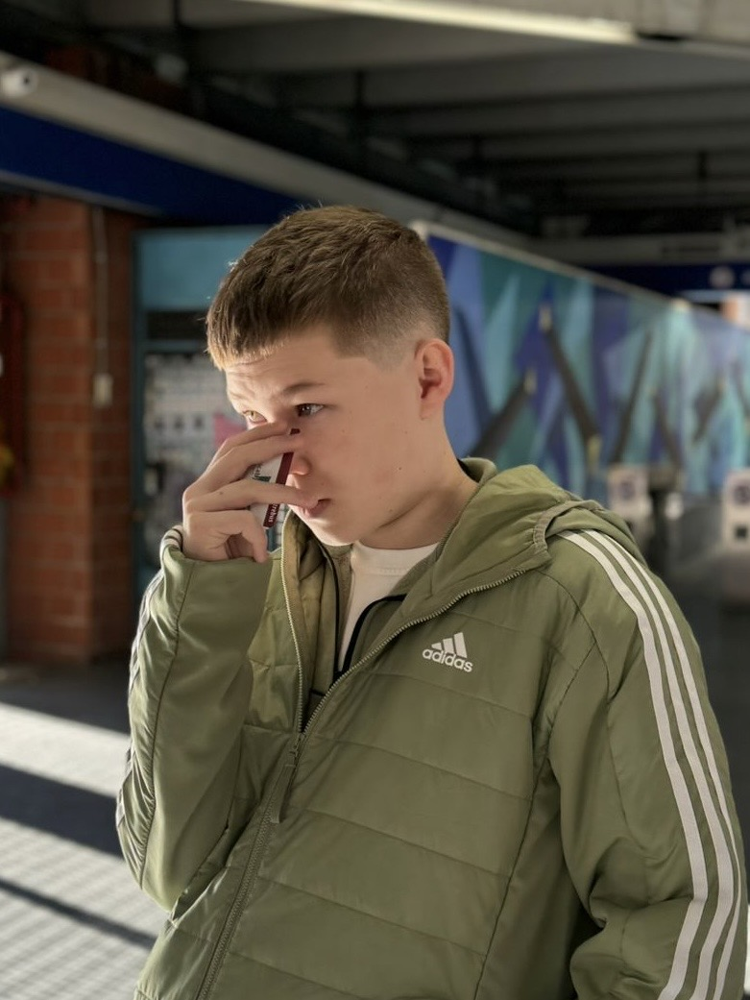
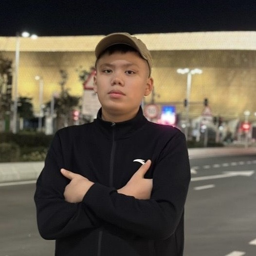
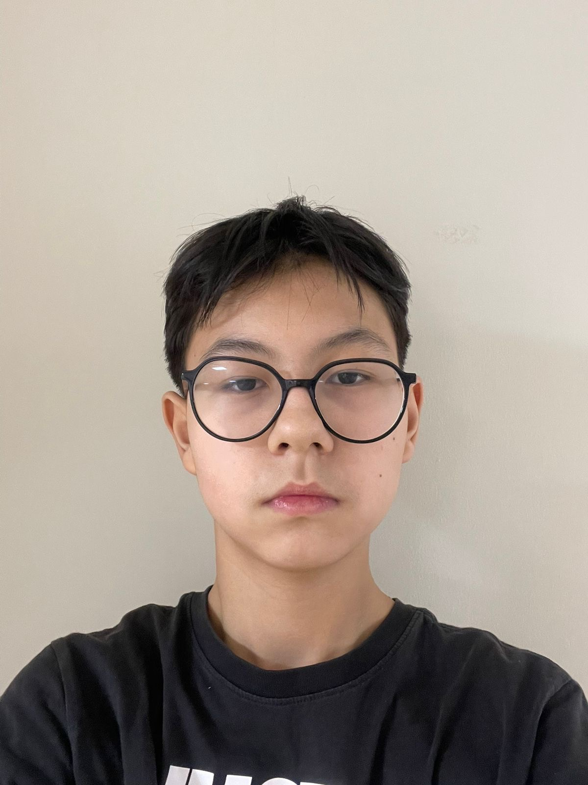
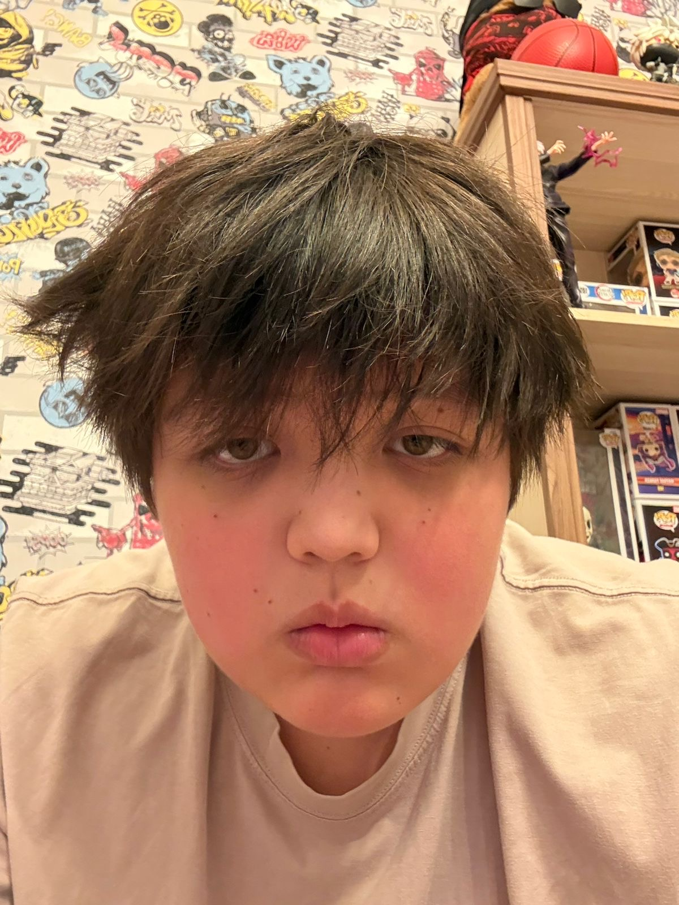

Dastan Satuov
Mentor
Sign Bridge helps deaf-mute people communicate without interpreter, using glove and camera AI modes with Arduino and Raspberry Pi.
Put on the Arduino-powered flex-sensor glove for gesture detection.
Perform sign language gestures, captured by sensors and AI.
Receive speech, text, or control signals instantly.

Mentor

Software Engineer

Designer

Web Developer

Content Creator

Hardware Engineer
Create low-cost, infinitely adaptable assistive tech that makes everyday communication accessible for hearing-impaired and non-verbal people globally.
Become a first-choice platform for gesture-to-speech conversion, integrating IoT glove, AI camera, and mobile companion apps for social inclusion.
• AI gesture recognition (MediaPipe) with 95% accuracy.
• Arduino flex-sensor glove, real-time feedback, and Bluetooth connection.
• Raspberry Pi camera mode for no-glove usage leveraging neural inference.
• 3-mode output: speech, text on screen, remote control via mobile.

Hardware prototype with embedded flex sensors and Arduino data acquisition.
Realtime gesture recognition demo with visualization.
Conduct in-depth market research, user interviews with deaf community, and technical feasibility studies to lay a strong foundation.
Build and rigorously test core hardware-software integration, ensuring high accuracy and reliability in gesture recognition.
Develop an intuitive mobile app for seamless settings management, remote control, and real-time feedback to enhance user experience.
Launch beta program with diverse user groups, gather comprehensive feedback, and iterate on design and functionality for optimal accessibility.
Scale production, expand language support, and launch globally with partnerships, ensuring widespread adoption and continuous improvement.
We are grateful for the support of our partners. Interested in joining us?
You could be here
You could be here
You could be here
📧 Contact us for partnership opportunities
Email: team@signbridge.io
Phone: +7 (123) 456-78-90